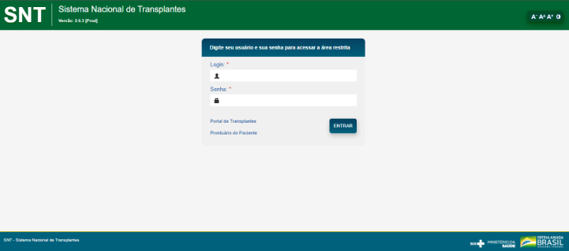

1954
Em Boston (EUA), um transplante renal bem-sucedido entre irmaos gemeos inaugura esse campo.
O transplante de órgão é considerado uma conquista da medicina moderna. É um procedimento cirúrgico que consiste na reposição de um órgão ou tecido de uma pessoa doente por outro órgão ou tecido normal de um doador vivo ou morto.
Em Boston (EUA), um transplante renal bem-sucedido entre irmaos gemeos inaugura esse campo.
Americanos fazem o primeiro transplante de rim entre doador e receptor sem parentesco.
Estreia o uso de órgãos vindos de cadaver. O avanço dos imunossupressores permite a primeira operção exitosa.
Os imunossupressores são medicamentos que evitam a rejeição do órgão transplantado.
O nosso sistema imunológico reconhece, defende e protege o nosso organismo contra infecções, e rejeitam tudo o que é estranho, o órgão transplantado é visto pelo sistema imune como algo estranho não pertencente ao “seu organismo”. Por isso é de extrema importância o uso dos imunossupressores, que irá ajudar a “enfraquecer” o sistema imunológico para que este não rejeite o órgão.
Para o sucesso do seu transplante é importante que as medicações sejam tomadas da forma prescrita pelo seu médico, seguindo os horários e as orientações determinadas.
A dosagem deve ser exata, pois ao ingerir uma quantidade maior, o seu organismo pode ficar mais susceptível às infecções e a toxicidade, e ao ingerir uma quantidade menor o seu organismo poderá rejeitar o órgão transplantado.
Os impressos para aquisição dos imunossupressores são preenchidos pelo médico durante a internação hospitalar. Os medicamentos são retirados em locais específicos indicados pela equipe que o acompanha e são de responsabilidade do paciente/familiar. É importante que a medicação seja bem controlada para que não falte no uso diário. E devem ser retirados mensalmente mediante receituário médico.
( Reprodução | G1 - Globo )
Geralmente durante o transplante são realizados induções, que podem ser por:
Transplantes inéditos com órgãos de falecidos são registrados: coração,na Africa do Sul, e figado, nos EUA.
Dilemas exigem nova definição formal do fim da vida para permitir o uso de órgãos. Surge o conceito de morte cerebral.
Surgem trabalhos pioneiros com transplante de coração, fígado, pâncreas e até intestino no Brasil.
O Brasileiro Silvano Raia faz o primeiro transplante de fígado entre pessoas vivas do mundo entre uma mãe e uma filha.
É criado o Sistema Nacional de Transplantes. Com o SUS, o país se torna líder global em transplantes na rede pública.
O Sistema Nacional de Transplantes (SNT) cuja função de órgão central é exercida pelo Ministério da Saúde, por meio da Coordenação-Geral do Sistema Nacional de Transplantes (CGSNT) é responsável pela regulamentação, controle e monitoramento do processo de doação e transplantes realizados no país, com o objetivo de desenvolver o processo de doação, captação e distribuição de órgãos, tecidos e partes retiradas do corpo humano para fins terapêuticos.
( Reprodução | Sistema Nacional de Transplantes - STN )
A equipe de Ben-Hur Ferraz Neto faz o primeiro transplante multivisceral (de vários órgãos) nacional em uma única sessão.
Um homem americano recebe um rim suíno modificado geneticamente. Começa a era dos xenotransplantes.
Pesquisadores da Universidade de Yale, nos Estados Unidos, usaram uma nova tecnologia chamada OrganEx que restaura células em órgãos de porcos mortos há uma hora.
Nesta quarta-feira (4), a descoberta foi publicada em um estudo na revista cientifica Nature, informando que a tecnologia OrganEx consegue restaurar a circulação e atividade das células em órgãos vitais de porcos, como o coração e o cérebro.
Desse modo, o estudo, bem como sua aplicação prática, questiona a ideia de que a morte cardíaca (quando a oxigenação e circulação sanguínea param) é irrevisível. O grupo de cientistas da Faculdade de Medicina da Universidade de Yale utilizou uma máquina controlada por computadores para simular o funcionamento cardíaco e pulmonar.
( Reprodução | Hardware.com )
O OrganEx é essa máquina, que serve para bombear o prime para a perfusão, que consiste em uma mistura de hemoglobina sintética, antibióticos e moléculas para proteger as células e prevenir coágulos sanguíneos.
A perfusão é a técnica usada em cirurgias cardíacas que consiste em manter um suporte artificial de vida através de uma máquina, substituindo temporariamente as funções cardíacas, pulmonares e renais, oxigenando o sangue e bombeando-o através do sistema circulatório.
“Após 1 h de isquemia quente (período entre a parada da circulação sangüínea do doador e o início da perfusão com a solução de preservação resfriada), a aplicação de OrganEx preservou a integridade do tecido, diminuiu a morte celular e restaurou processos moleculares e celulares selecionados em vários órgãos vitais”, descreveu o artigo.
Fonte: Hardware.com
Hemograma sem agulha e com resultado na hora já é uma realidade
No mês em que se comemora o Dia Nacional da Segurança do Paciente, em 1° de abril, é preciso lembrar a importância de boas práticas na prevenção de eventos adversos para a garantia de resultados seguros.
Nos exames laboratoriais o avanço da tecnologia tem contribuído para o surgimento de métodos de elevada sensibilidade e especificidade, que geram resultados com grande precisão, acurácia e reprodutibilidade. Além disso, o investimento em técnicas não invasivas acaba por tornar estes procedimentos cada vez mais seguros e menos sujeitos a erros.
Foi pensando em eliminar a necessidade de tubos e mais tubos de amostras de sangue e agulhas que afligem os mais sensíveis que a Moriya trouxe ao Brasil o Tensortip™ Matrix™ (MTX), software de monitoramento de sangue da Cnoga Medical. O dispositivo israelense não invasivo promete fazer hemogramas apenas com o toque do dedo, realizando a análise sanguínea sem tirar uma única gota de sangue do paciente.
( Reprodução | Portal Hospitais Brasil)
O monitor multiparâmetro de dedo é um aparelho leve, portátil e simples que elimina a necessidade de amostragem de sangue, permitindo conduzir testes sanguíneos de forma segura, indolor, precisa e rápida. A tecnologia do MTX baseia-se na análise fotográfica em tempo real do tecido dos capilares da ponta do dedo aliada a um sofisticado algoritmo matemático, que possibilita coletar em segundos mais de 14 parâmetros biológicos diferentes.
Com exibição de forma de onda, o dispositivo realiza monitoramento de sangue não invasivo, hemodinâmica contínua e monitoramento do gás sanguíneo através de parâmetros de pulso, SpO2, pressão sanguínea, HGB (hemoglobina), Hct (hematócrito), O2, CO2, CO/SV/SVV/CI (débito cardíaco, volume sistólico, variação do volume sistólico e índice cardíaco), PCO2, PO2, pH, contagem de hemácias (RBC), viscosidade sanguínea (BV) e pressão arterial média (MAP).
Os resultados obtidos podem ser armazenados na memória do monitor de bioparâmetros para revisão do histórico, ou ainda enviados para um aplicativo móvel e à nuvem. Aprovado pela Anvisa, o aparelho MTX permite fornecer aos profissionais e estabelecimentos de saúde fácil acesso aos dados médicos dos pacientes para uma melhor gestão de doenças, possibilitando assim o monitoramento remoto contínuo.
Fonte: Portal Hospitais Brasil
A tecnologia poderá imprimir no futuro órgãos como rim, fígado e enxertos cardíacos, o que diminuirá a necessidade de doação de órgãos e também o índice de rejeição e infecção. Trata-se da bioimpressora 4D, Dr. Invivo da Rokit, cuja primeira licença concedida pela Anvisa no Brasil é para tratar lesões de pele, feridas mais complexas, como úlceras do pé diabético, queimaduras, câncer de pele, entre outras.
( Reprodução | Saúde Bussiness )
Relacionado: Hospital Nove de Julho realiza procedimento inovador no Brasil de regeneração de tecidos com tecnologia de bioimpressão 4D
Ele explica que ao compararmos a eficácia da bioimpressora com os tratamentos utilizados atualmente, a diferença é muito grande. “Um estudo realizado nos EUA, por exemplo, mostrou que a terapia de regeneração tissular com Dr. Invivo custa menos que os tratamentos convencionais existentes. Além disso, os resultados são mais rápidos, a cicatrização total das feridas em mais de 85% dos pacientes tratados aconteceu em apenas 30 dias.”
Ele comenta também que, em muitos casos, não existe atualmente outra opção que não seja a amputação. Além disso, feridas tratadas de forma convencional têm um tempo de tratamento, quando efetivo, de 6 meses, aproximadamente. Com isso, o paciente passa por longos períodos sem um resultado efetivo, com internações prolongadas e de alto custo. Tudo isso impacta a sociedade como um todo.
Além disso, Pozza explica que com essa tecnologia o paciente poderá voltar a vida ativa mais rapidamente, além de economizar com procedimentos cirúrgicos recorrentes, uso de próteses e diversos outros custos relacionados, como reabilitação, uso de medicações, longos períodos de internação, etc.
Fonte: Saúde Bussiness